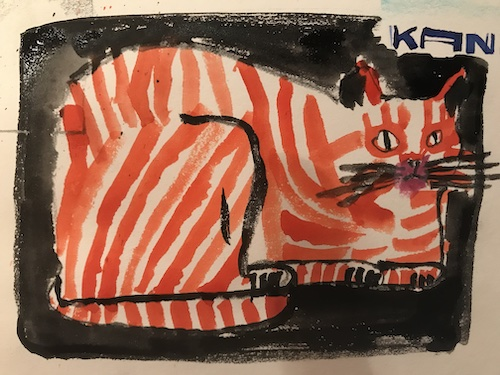

I recall that simple recall is an effective technique of learning. Closing ones eye and remembering the things that come to one's mind. I recall reading the code and design weeklies in my mailbox. The A11yphant challenges that I did today for learning accessibility, and from those I learned about the DOCTYPE tag and that the html attribute let's the browser know that the document is the latest HTML5.
The title of the page is enclosed in the title tag inside the head element. It can be the same as the h1 heading of the document. There should be only one h1 heading and it has to be the first element before all the other headings except when another heading best describes the page content.
I am practicing the drop two voicings of the major7, minor7, dominant7, diminished and half-diminished chords and was happy today because I made some progress.
This photo inspires me. In the Artist's Way there is a task to collect images of a future or dream that we would like to create.
Yesterday I drew this drawing after Miroco Machiko's drawing of a cat. It felt great.
